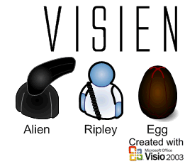

29.11.2006I'll be back, или я тут, просто ненадолго отошел.
За весну, лето и осень многое изменилось. Попробовал себя на поприще создателей фигур. Понравилось. Правда вначале еле-еле все раскручивалось и наконец-то раскрутилось.
Сменил работу, сдал семестр на отлично, появилась привлекательная возможность самореализации в самостоятельных попытках создания грамотных шаблонов. Много изучал пользовательский интерфейс (Головач, Нельсон, и др.). Начал делать перевод Visio 2003. Когда перевод подходил к концу, сгорел мой RAID, забрав с собой все наработки Visio, статьи и частичку моей жизни. Что-то осталось, но как самый обычный человек был слишком самонадеян. Не что не вечно под луной. Как, как я мог это забыть. Кто знает что такое винчи IBM DTLA ("дятлы"), будет приятно удивлен, что пара таких дятлов безропотно сосуществовали у меня 5! лет "и умерли в один день". :-( За это время скопилось очень много наработок (правда пока они лишь в моем воспаленном сознании и грубо давят на мозг). Я никуда не делся, я тут. Все будет, надо только подождать. До середины декабря. Галерея пока будет пополняться исключительно коммерческими работами, на "свободную поэзию" времени банально не хватает. Думаю завести ЖЖ, чтобы изливать потоки воспаленного сознания более оперативно. Стал потихоньку заводить "видеоуроки" своей работы, если появится интерес, можно вместе со статьями выкладывать и видеоприложения. Про размер, 1280*1024, 1 час работы весит >100 метров.
Засим прощаюсь, но ненадолго... ;-)
21.03.2006Внимание, установщик Microsoft Visio 2007 Beta 1 TR хоть и спрашивает, что делать с остальными версиями Visio, если у вас их несколько, но даже если отметить, что ничего не делать, программа тихо мирно удаляет Microsoft Visio 2002. Не понял, почему именно 2002 версия. Все остальные остались невредимы. Тестеры, будьте бдительны.
По просьбам трудящихся: Microsoft Visio 2007 Beta 1 TR из состава Microsoft Office Select 2007 Beta1 TR build (released 3/06). Дальше думаю понятно как действовать. :-)
20.03.2006Очередное приключение фигуры User Shape. На сей раз это друзья из сериала South Park.
Microsoft Visio 2007 Beta 1 TR попался мне в руки. Интерфейс пока на новый не заменили, остался старый. Изменений по сравнению с предыдущей Beta не заметил.
Оставить комментарии
19.03.2006Передача пакетов в среде Ethernet. Где-то увидел, решил облагородить.
Оставить комментарии
18.03.2006Обновился ГОСТовский шрифт. В него были добавлены непечатаемые знаки Word'а, для удобства редактирования.
Шрифт
Оставить комментарии
Microsoft Office 2007 (кодовое имя Office 12) снова сменил интерфейс. На сей раз не так кардинально, как в начале. Теперь интерфейсы доступны в различных цветовых гаммах. Хотя обновленного интерфейса Visio 2007 я пока не встречал. Думаю, что всех компонентов офиса ждет участь по перемене интерфейса. Если рассуждать на тему интерфейса нового Visio 2007, то думаю, он будет похож на интерфейс PowerPoint 2007. Вернее еще в первой Beta версии, уже были предприняты попытки смены интерфейса Visio 2007.
The New Microsoft Office User Interface Overview
Оставить комментарии
05.03.2006Сайт начинает обрастать комментариями. Комментарии пока сделаны в тестово-пробном режиме, так что возможны сбои. :-( Но надеюсь, что это временно. Комментарии не требуют какой-либо регистрации, да и вообще кроме ника ничего не требуют. :-) Отдельное спасибо Геннадию Туманову за помощь.
26.02.2006Очередное приключение фигуры User Shape. На сей раз это Чужой.

Оставить комментарии
03.02.2006В раздел "Статьи" добавлена статья.
"Visio на двух мониторах"
29.01.2006Добавлена еще одна картинка на страницу работ. Так уж получилось, что тоже 25-я.
"Работы".
26.01.2006В раздел "Статьи" добавлена статья. Уже 25-я. Можно сказать юбилейная... :-)
"Почти конфиденциально в Visio 2003/12"
Архив новостей: 2009 2008 2007 2006 2005 2004Автор: Ничков Алексей (Digitall)